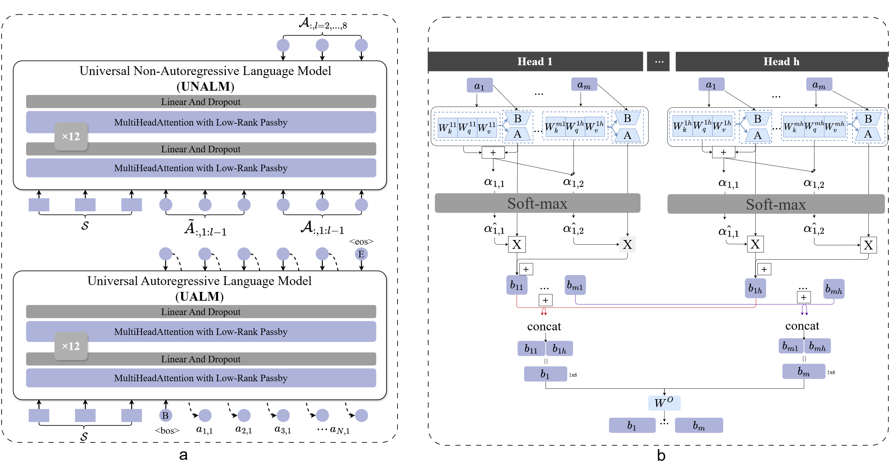

Abstract
Recent advancements in end-to-end text-to-speech models have made significant progress. However, these approaches based on high-resource languages, are inapplicable for low-resource languages, and existing low-resource speech synthesis methods are typically specific to single languages. Consequently, the pursuit of a universal methodology for low-resource speech synthesis emerges as a critical problem that requires immediate attention. Unlike previous works, we propose a novel and universal approach for multiple low-resource languages by leveraging phoneme fusion coordinating low-rank decomposition in a pre-trained multilingual model. Specifically, by establishing a multilingual phoneme dictionary through phoneme fusion and applying parameter freezing and matrix decomposition techniques for fine-tuning, the proposed method was extensively evaluated across four different languages, each utilizing approximately 3 hours of speech data. The experimental results demonstrate that the quality of the synthesized speech surpasses current mainstream methods for low-resource speech synthesis, achieving outcomes comparable to those trained with tens of hours of data. Audio samples are available at https://priankaan.github.io/Demo.github.io
Comparative audio samples of different systems from four languages: Thai, Lao, Vietnamese (Vi), and Kurdish (Ku)
| languages | Text | VALL-E-U | Baseline | FastSpeech2 |
|---|---|---|---|---|
| Lao | ຂໍຂອບໃຈທີ່ໄດ້ພົບເຈົ້າ | |||
| Lao | ສະບາຍດີ ຂ້ອຍຍິນດີທີ່ໄດ້ພົບເຈົ້າ | |||
| Thai | ฟ้ารักพ่อ ฟ้าจะพาพ่อไปทุกที่ | |||
| Thai | สวัสดีครับ | |||
| Ku | ە لەسایەی زوڵفی تۆوە شەو درێژە | |||
| Ku | مرۆڤی پێگەیشتوو ٣٢ ددانی لە دەمە | |||
| Vi | Xin chào! Rất vui được gặp bạn. |